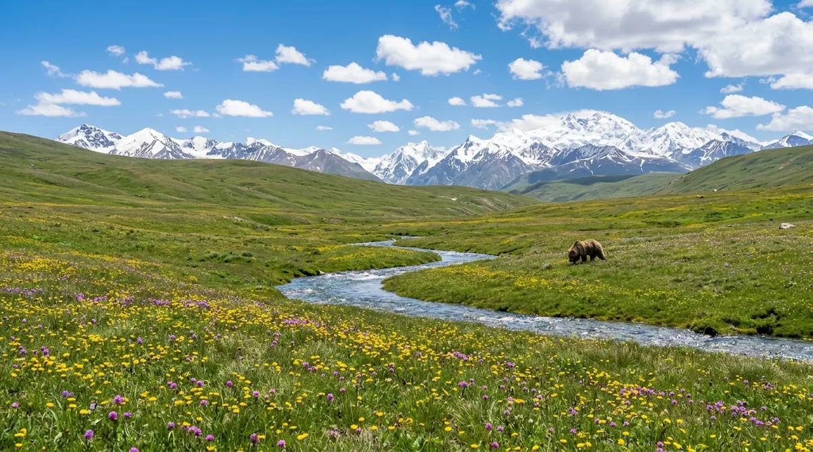
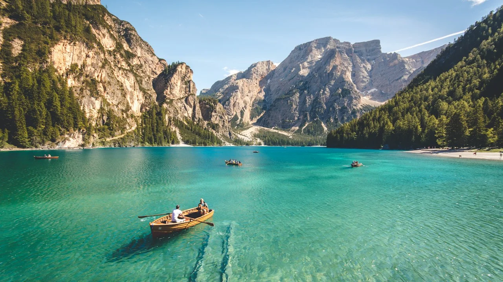
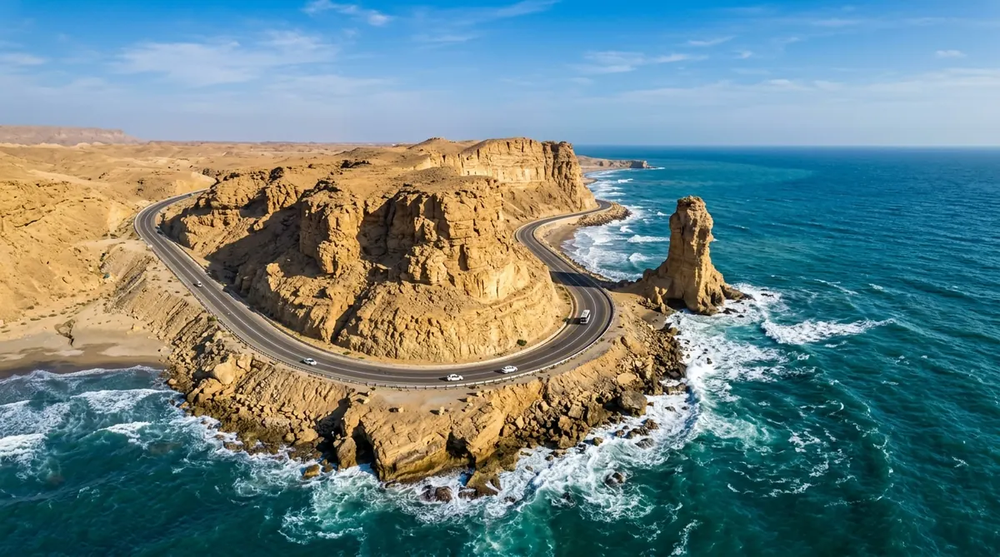

Hunza Valley Autumn Dossier: Golden Poplars, Rakaposhi & The Ancient Silk Route
As October chills descend on Gilgit-Baltistan, Hunza ignites in a fiery tapestry of amber poplars, apricot orchards, and 7,788m snow-clad granite spires.

Deosai Plains: The Land of Giants Where Himalayan Brown Bears Roam Above the Clouds
At an average elevation of 4,114 meters, the world’s second-highest alpine plateau remains accessible for only a brief 12-week summer window.
Skardu & Shangrila: The High-Altitude Oasis at the Foothills of the Eight-Thousanders
How Skardu transformed from a remote frontier outpost into the world capital of mountaineering expeditions and boutique alpine hospitality.

Passu Cones & Attabad Lake: The Turquoise Waters Born from Mountain Collapse
The dramatic story of how a catastrophic landslide created Pakistan’s most mesmerizing emerald body of water, flanked by the jagged Passu needles.
Executive Intelligence & Field Reports
6 Dossiers AvailableThe Kalash Valleys: Ancient Animist Traditions in the Heart of the Hindu Kush
Deep inside the remote mountains of Chitral, an ancient civilization celebrates seasonal solstice festivals with hypnotic drums, dance, and hand-embroidered robes.

COASTAL ODYSSEYMakran Coastal Highway & Hingol: The Mars-Like Formations of Balochistan
A 653-kilometer coastal masterwork connecting Karachi to Gwadar, cutting through surreal mud volcanoes, marine spires, and azure Arabian Sea breakers.